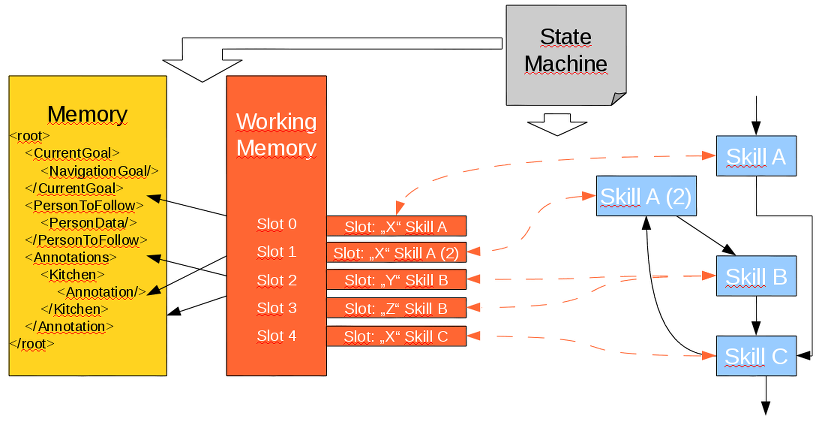

Memory Slots¶
The memory is used to memorize data for different skills or programs.

The used xpath (location) for each slot is defined in the scxml. They work similar to actuators and sensors
Example:
slot = configurator.getSlot("SlotID", Type.class);
SlotIDis used to map the configuration.Type.classis the used datatype defined in Interfaces.
SCXML¶
The configuration is per skill basis.
Example:
<data id="#_SLOTS">
<slots>
<slot key="SlotID" state="StateID" xpath="/PATH" />
<slot key="SlotID" state="StateID" xpath="/PATH" />
</slots>
</data>
PATH is the full path for the memory. Has to start with “/”.